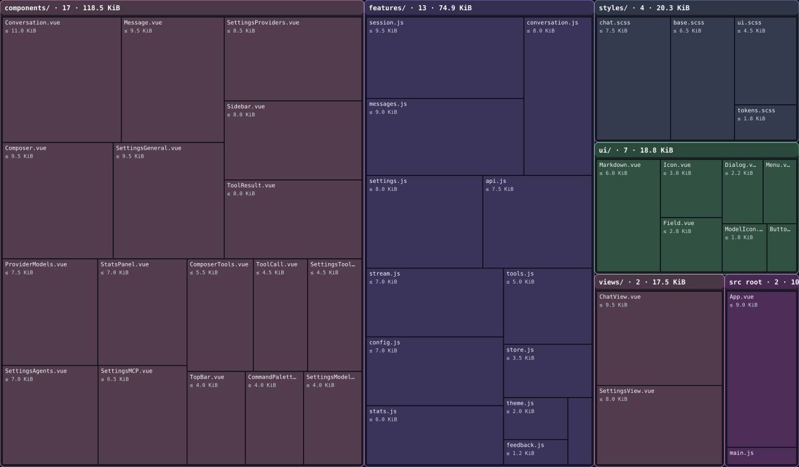

先别想目录。用户实际上只做两件事：对话和改设置。对话只有一个聊天面，空对话和已有会话不是两个页面；设置是一组数据表单，不是九个页面加九个编辑器。按这个内容结构推导，前端只需要 2 个页面、13 个主体文件、17 个界面部件、7 个控件、4 个共享样式，共 45 个源文件；每个文件都有明确的 KiB 预算，不再靠“合并大文件”假装精简。
| 用户实际在做什么 | 内容单位 | 代码放在哪 |
|---|---|---|
| 打开、切换、重命名、删除会话 | 会话（Session） | features/session.js + components/Sidebar.vue |
| 发一句话，看回复、思考、工具结果 | 消息（Message）、工具调用（ToolCall） | features/conversation.js、stream.js、messages.js + Conversation、Message、ToolCall、ToolResult |
| 输入、附件、模型/智能体/思考档位 | 输入区（Composer） | components/Composer.vue + ComposerTools.vue |
| 改外观、供应商、模型、智能体、工具、MCP | 设置字段（Setting fields） | features/settings.js、config.js + SettingsView 和 6 个 section（外加供应商模型子页） |
| 看上下文、用量、任务进度 | 统计与任务（Stats、Todo） | features/stats.js、tools.js + StatsPanel、ChatView |
这张表先于目录：每个“内容单位”只对应少量文件。空对话和已有会话合成 ChatView.vue；九个设置页合成 6 个设置 section；十一个工具结果合成一个 ToolResult.vue。

App.vue 接线；views/ 只有 ChatView 和 SettingsView；components/ 是内容区域；features/ 是数据和行为；ui/ 只向下；styles/ 是共享样式。没有任何业务文件回指 App.vue、views/ 或 components/。
app/ 和 session/、app/ 和 settings/ 互相回指；同一个对话拆在 draft/、composer/、session/ 三处。问题不是图没排好，是内容被按屏幕切碎了。
features/ 只被 views/ 和 components/ 调用；components/ 只往下拿数据和控件；ui/ 不 import features/；styles/ 不知道组件。没有 commands/ 的额外一层，也没有 chat/、settings/ 这种“一个主体一个文件夹”。
Conversation.vue 的 11.0 KiB（约 300 行），其余都 ≤ 9.5 KiB；平均约 5.8 KiB。总预算 260.0 KiB，相对当前 486.5 KiB 约 -46%。这不是“搬文件”能得到的，必须同时删掉重复抽象、合并设置页、用原生控件替代控件皮肤。tabs.js（没有标签栏 UI）、i18n.js（只有中文）、avatar.js（无人引用）。ui/index.js、Sheet/Popover 包装。ToolResult.vue，按结果类型分支。<style scoped>，不再机械配对。| 目录 | 文件 | 预算 |
|---|---|---|
| src 根 | 2 | 10.0 KiB |
features/ | 13 | 74.9 KiB |
views/ | 2 | 17.5 KiB |
components/ | 17 | 118.5 KiB |
ui/ | 7 | 18.8 KiB |
styles/ | 4 | 20.3 KiB |
| 合计 | 45 | 260.0 KiB |
目标：Vue 27、JS 14、SCSS 4。每个文件 ≤ 11 KiB；单文件超过 300 行就拆成更小的内容主体，不再按“页面/组件/工具文件”继续加层。
| 批次 | 动作 | 验收 |
|---|---|---|
| 1 | 冻结行为基线：现有构建、单测、界面检查先全部通过；记录桌面/手机截图。 | 当前功能可回归。 |
| 2 | 删死代码和空壳：tabs、i18n、avatar、20 个空 SCSS、UI barrel、纯转发页；拆 app/ui.js ↔ settings/settings.js 的环。 | 循环 1→0；构建/测试绿。 |
| 3 | 合并页面：Draft + Session → ChatView；9 个设置页 + 编辑器 → 6 个 section；ProviderModels 保留为供应商子页面。 | 设置、聊天、回退、审批流程不变。 |
| 4 | 合并展示：11 个工具视图 → ToolResult；Reasoning/Message 合并；顶部统计留在独立 StatsPanel。 | 工具行、思考、统计截图一致。 |
| 5 | 收缩控件：31→7；原生 select/checkbox/radio/switch/range/progress 替代包装；删除对应 SCSS。 | 键盘、焦点、ARIA 名称全部通过。 |
| 6 | 按预算重写：features 13 个、组件 17 个、样式 4 个；每个文件对照 KiB 预算，超标就拆内容主体。 | 文件数、每文件体量、零循环、全量测试通过。 |
8cabb03。